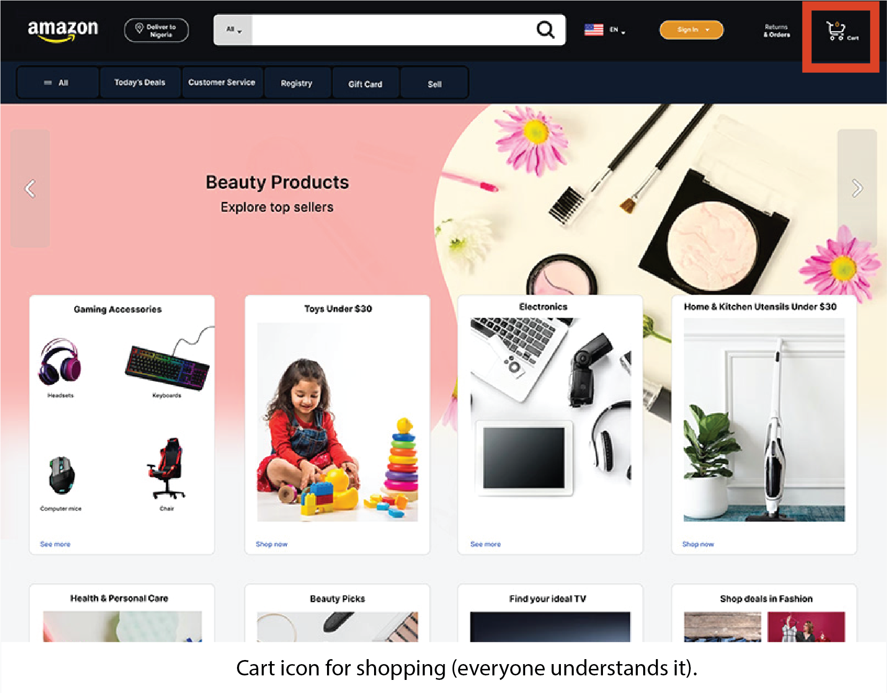

Introduction to UI/UX Design
Designing experiences that are simple, useful, and visually appealing.
UI/UX design is about making apps, websites, and real-world products easy and enjoyable to use. It applies to everything from mobile apps to ATMs, cars, and even doors.
UI (User Interface)
UI is the visible part of anything you use. It includes design, colors, buttons, shapes, and layout. UI helps users understand what to do just by looking.
- Colors
- Buttons
- Icons
- Layout
Example (Not just apps):
- Microwave → Display and buttons = UI

UX (User Experience)
UX is about how a person feels while using something. If it is easy, fast, and smooth, then UX is good. If it is confusing or slow, UX is bad.
- Easy to use
- Fast interaction
- Stress-free flow
- Enjoyable experience
Example (Not just apps):
- ATM → Easy steps to withdraw money = Good UX

Types of UI Design
1. Character User Interface (CUI)
A Character User Interface (CUI) is a type of interface where users interact with a computer using text (characters) instead of graphical elements. It is very similar to a Command Line Interface (CLI), and in many cases, both terms are used interchangeably..
- The user types commands using a keyboard.
- The system responds with text output.
- No graphics, icons, or buttons are used.
2. Graphical User Interface (GUI)
A Graphical User Interface (GUI) is a type of interface that allows users to interact with a system using visual elements like icons, buttons, windows, and menus.
- Users interact using a mouse, keyboard, or touch.
- Actions are performed by clicking icons and selecting options.
- Information is displayed visually
2.Voice User Interface
A Voice User Interface (VUI) allows users to interact with a system using voice commands.
- User speaks commands through a microphone.
- System processes speech and responds with voice or text
Touch User Interface
A Touch User Interface allows users to interact with a system by touching the screen directly.
- Users tap, swipe, or pinch on the screen.
- System responds based on touch gestures.
UI Design Principles
Clarity
Keep everything easy to understand.
Consistency
Maintain same design patterns.
Simplicity
Remove unnecessary elements.
Visual Hierarchy
Show importance using size & color.
Feedback
Show response to user actions.
Accessibility
Design for everyone.
Efficiency
Complete tasks quickly.
Familiarity
Use known patterns.
UI Design Principles
1. Clarity (Easy to Understand)
Clarity means the design should be simple and easy to understand. Users should not feel confused. Everything (text, buttons, icons) should clearly tell what to do.
- Use simple words
- Avoid unnecessary design
- Buttons should be easy to recognize
- Clear labels (like “Login”, “Buy Now”)

2. Consistency (Same Design Everywhere)
Consistency means keeping the same style throughout the design. When things look and work the same, users don’t get confused
- Same colors and fonts
- Same button styles
- Same layout pattern
- Repeated elements behave similarly

3. Simplicity (Keep it Simple)
Simplicity means not adding too many things. A simple design helps users focus and complete tasks quickly.
- Remove unnecessary elements
- Use less text
- Clean layout
- Focus on important things

4. Visual Hierarchy (Show What is Important)
Visual hierarchy means arranging elements so users can easily see what is most important first.
- Use bigger size for important things
- Use bright colors for important buttons
- Place important items at top
- Use spacing to separate elements

5. Feedback (Response to User Action)
Feedback means the system should respond when a user does something. This helps users know their action worked.
- Show loading or success message
- Button changes color when clicked
- Show error messages if something is wrong

6. Accessibility (Design for Everyone)
Accessibility means making design usable for all people, including those with disabilities.
- Use readable fonts
- Good color contrast
- Add icons + text together
- Support screen readers

7. Efficiency (Fast and Easy to Use)
Efficiency means users can complete tasks quickly without wasting time.
- Reduce steps
- Provide shortcuts
- Fast navigation
- Auto-fill options

8. Familiarity (Use Common Design Patterns)
Familiarity means using designs that users already know. This makes it easier to use without learning.
- Use common icons (🔍 for search)
- Follow standard layouts
- Use known patterns

UX Design Principles
User-Centered
Focus on user needs.
Usability
Easy to use.
Consistency
Keep design uniform.
Accessibility
Usable by all users.
Visual Hierarchy
Show importance clearly.
Feedback
Respond to actions.
Simplicity
Keep it minimal.
Learnability
Easy to learn.
Flexibility
Works for all users.
Error Handling
Prevent & fix errors.
UX Design Principles
1. User-Centered Design (focusing on users’ needs)
Design should always focus on the needs, goals, and behaviors of the user rather than the system or business alone.
- Understand users through research (surveys, interviews)
- Create user personas
- Design based on real user problems
- Test designs with actual users

2. Usability (easy to use)
A product should be easy to use and intuitive (easy to understand without thinking much), even for first-time users
- Simple and clear navigation
- Minimal learning efforts
- Clear instructions and feedback
- Reduce user errors

3. Consistency (uniformity in design)
Elements should behave and appear consistently throughout the product.
- Same colors, fonts, and layouts
- Consistent button styles and actions
- Follow platform conventions (e.g., Android/iOS patterns)

4. Accessibility (usable for all people)
Design should be usable by people with different abilities and disabilities.
- Use readable fonts and good contrast
- Provide alt text for images
- Support screen readers
- Ensure keyboard navigation

5. Visual Hierarchy(arranging importance visually)
Arrange elements to guide users’ attention to the most important parts first.
- Use size, color, and spacing effectively
- Highlight key actions (e.g., buttons)
- Organize content logically

6. Feedback & Responsiveness (system response to user actions)
Users should always know what is happening when they interact with the system.
- Show loading indicators
- Provide success/error messages
- Use animations or micro-interactions
- Immediate response to actions

7. Simplicity (Minimalism)
Keep the design simple by removing unnecessary elements.
- Avoid clutter
- Focus on essential features
- Use whitespace effectively
- One primary action per screen

8. Learnability (Easy to Learn)
New users should quickly understand how to use the product.
- Simple onboarding
- Guided steps
- Helpful hints
- Provide tutorials

9. Flexibility & Efficiency (adaptability and speed of use)
Design should work well for both beginners and advanced users.
- Provide shortcuts for experienced users
- Allow customization
- Optimize workflows

10. Error Prevention & Recovery (avoiding and fixing mistakes)
Prevent errors when possible and help users recover easily if they occur.
- Confirm destructive actions (e.g., delete)
- Provide undo options
- Clear error messages with solutions

Information Architecture
What is Information Architecture?
Information Architecture (IA) is the practice of organizing, structuring, and labeling content so that users can easily find and understand information.
Elements of Information Architecture (IA)
1. Organization System
Defines how content is grouped and arranged.
- Products divided into Electronics, Clothes, Books
2. Labeling System
Refers to names or labels used for content and menus.
- “Home”, “About Us”, “Contact”, “Cart”
3. Navigation System
Shows how users move through the app or website
- Menu bar, sidebar, buttons, links
4. Search System
Allows users to search for specific information.
- Search bar in websites like shopping apps
How These Elements Work Together
1. Organization groups content
2. Labelling names the content
3. Navigation helps move around
4. Search helps find quickly
Example (Shopping App)